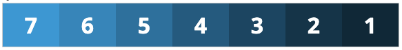

Flex Box
Una de las tareas principales de CSS es incorporar todos los elementos de un sitio web en un diseño. El texto, las imágenes y los botones se pueden organizar de forma ordenada. Los diseñadores pueden especificar, hasta cada píxel, dónde debe aparecer cada elemento en la pantalla. Sin embargo, esto solo funciona correctamente si se conocen el tamaño de la pantalla y la relación de aspecto. La tecnología móvil presenta un desafío aquí porque los tamaños de pantalla y las relaciones de aspecto varían según el teléfono inteligente o la tableta. CSS es demasiado rígido para lograr un resultado convincente.
El diseño se ajusta de forma flexible y dinámica a la pantalla en uso. El espacio se llena o los elementos se juntan para que cada elemento de la página web permanezca a la vista. Para que esto funcione sin que se interrumpa el diseño deseado, Flexbox utiliza dos ejes. El eje principal normalmente corre horizontalmente; el eje transversal corre verticalmente. Usando estos ejes, los elementos se pueden ordenar dentro de la caja. De esta manera, los elementos se pueden distribuir en relación unos con otros. CSS Flexbox también se asegura de que el espacio que rodea a estos elementos se llene de manera sensata.
Ejemplo 1
.contenedor {
display:flex;
}
.elemento {
width:25%;
}
Resultado:

Al no definir el comportamiento de dirección y tamaño que tendrán los elementos de nuestro contenedor, aunque hayamos definido una anchura de elementos del 25% éstos se adaptan a su padre ocupando el 100% de anchura entre la suma de todos. Por defecto, tiene ese comportamiento “flexible” como indica su nombre.
Ejemplo 2:
La propiedad “flex-direction“, que puede tomar 4 valores y se aplica al padre (contenedor):
- flex-direction:row (los elementos son organizados de izquierda a derecha como en el ejemplo anterior)
- flex-direction:row-reverse (los elementos son organizados de derecha a izquierda)
- flex-direction:column (los elementos son organizados de arriba hacia abajo)
- flex-direction:column-reverse (los elementos son organizados de abajo hacia arriba)
.contenedor {
display:flex;
flex-direction:row-reverse;
}
Resultado:
Ejemplo 3:
La la propiedad “flex-wrap“, cuyo valor afecta a cómo se distribuyen los elementos en fila y, por consiguiente, a su tamaño. Los posibles valores son:
- flex-wrap:nowrap (Los elementos se muestran en línea, en una sola fila, y su tamaño se ajusta al contenedor siempre y cuando la suma de todos ellos sea mayor o igual que el 100% de la anchura del contenedor)
- flex-wrap:wrap:row-reverse (Los elementos se muestran en línea, pero si su anchura supera la del contenedor, se distribuyen en varias filas)
- flex-wrap:wrap-reverse (Los elementos se muestran en línea, pero si su anchura supera la del contenedor, se distribuyen en varias filas, y además lo hacen en orden inverso al de maquetación)
.contenedor {
display:flex;
flex-wrap:wrap;
}
Resultado: